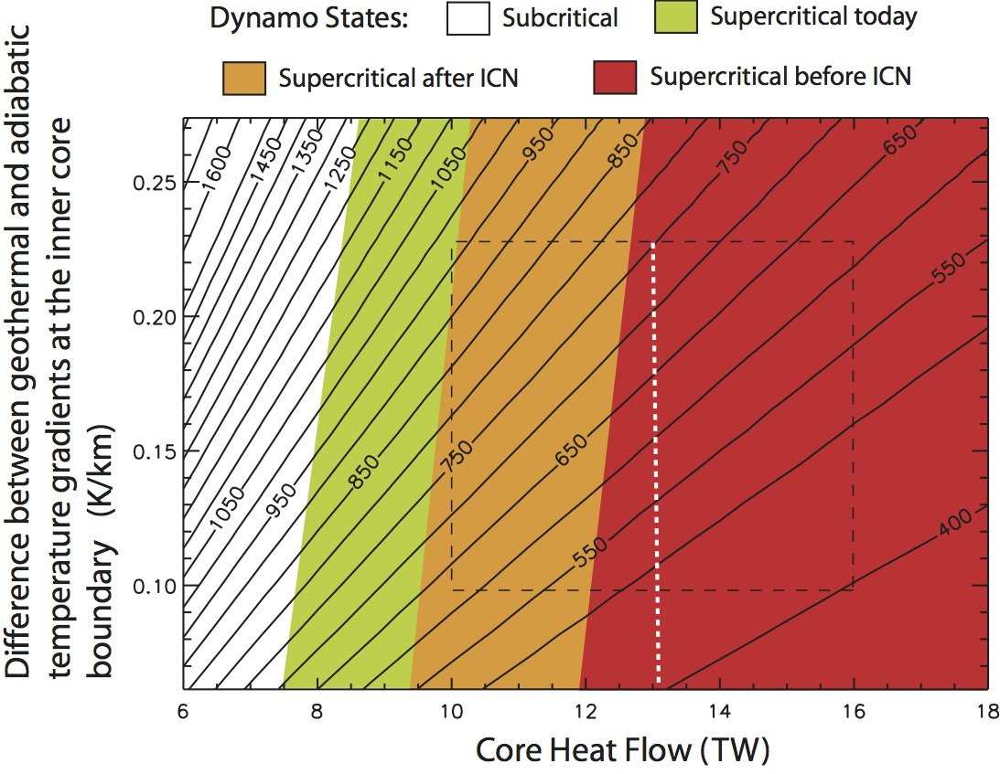

Projects
The Young Inner Core: Constraints on the timing of inner core nucleation from mantle global circulation
Core
Mantle convection removes prodigious amounts of heat from Earth's metallic core; estimates place the present-day core heat loss in the range of 8-16 TW (terawatts=1012 Watts). As a consequence, the core is cooling at a relatively high rate, in the neighborhood of 100 K per billion years.
The effect of this cooling is illustrated in Figure 1, which shows profiles of temperature and light element concentration (light elements include S, Si, and O in a mostly Fe-Ni metal alloy) versus radius through the solid inner core and the molten liquid outer core. The radius of the core-mantle boundary (CMB) is approximately 3480 km and the present-day radius of the inner core boundary (ICB), is approximately 1220 km. The ICB is assumed to be at the melting temperature of the outer core liquid, therefore it marks the intersection of the geotherm in the core (labeled Tad) and the melting curve (labeled Tmelt). As the core cools, Tad decreases and the radius of the aforementioned intersection increases, i.e., the inner core grows with time outward from Earth's center. The decrease in core temperature between the time of inner core nucleation (ICN) and the present-day is given by the difference in the dotted and solid blue curves. As the inner core solidifies, the light elements partition into the outer core, providing a major source of power for the geodynamo.

Figure 1: Inner and outer core temperature and light element profiles for the present-day and at the time of inner core nucleations.
Figure 2 shows the range of predicted ages of the inner core, expressed as the time of nucleation (ICN) in millions of years before present (Ma), from calculations by Olson, Deguen, Rudolph, and Zhong (2015). The x-axis is the total heat flow across the core-mantle boundary in terawatts. The y-axis is the difference between the geothermal gradient and the melting point gradient at the inner core boundary, measured in K/km. The dashed box denotes the range of uncertainty in these two parameters. The dotted vertical white line denotes the time average heat flow across the core-mantle boundary from our suite of mantle global circulation models (GCMs); this represents our preferred value for the time average rate of heat loss from the core.
Figure 2. Predicted ages of the inner core.
Possible inner core ages within the dashed box range from a maximum of about 1000 Ma (Ma=million years ago) to a minimum of about 400 Ma. However, there are additional constraints that come from the need to maintain the geodynamo by convection in the liquid outer core over the lifetime of the inner core and even before. These constraints are shown as background colors. Parameter combinations for which the core is subcritical for convectively-driven dynamo action, supercritical today, supercritical just after ICN, and supercritical just before ICN are indicated by distinct color bands. These bands are based on an assumed thermal conductivity in the core of 100 W/m/K.
Core heat flow is high enough to maintain the geodynamo today and also when the inner core was very young; therefore the time average core heat flow must lie to the right of the green-brown color boundary. In addition, the core heat flow must have been high enough to maintain the geodynamo before the inner core nucleated. Consequently, only the parameter combinations in the red portion of the diagram explain geodynamo longevity. Within this portion of the diagram. the predicted inner core age ranges between 400 and 760 Ma. Based on the time average core heat flow from our mantle GCMs, the predicted range of inner core age is slightly narrower, between about 480 and 750 Ma.
Either interpretation implies that the solid inner core is by far the youngest major division of the Earth's interior. It is possible that inner core nucleation occurred around the time of Snowball Earth events in the late Precambrian, or even around the time of the great Cambrian explosion of life.
Reference:
Olson, P., Deguen, R., Rudolph, M.L., Zhong, S., 2015. Core evolution driven by mantle global
circulation, Phys. Earth Planet. Inter., 10.1016/j.pepi.2015.03.002.